Exploring the World: My Travel Adventures
Traveling has always been a passion of mine, and at 29 years old, I have been fortunate enough to explore some of the most beautiful destinations across Asia and the Philippines. Each journey has given me unforgettable experiences, breathtaking sights, and stories worth sharing. Here’s a glimpse into my adventures so far.
Discovering Asia
Asia is a diverse continent filled with rich cultures, historical landmarks, and stunning landscapes. Each country has its unique charm, offering something different for every traveler.
THAILAND

From the vibrant streets of Bangkok to the serene beaches of Phuket, Thailand is a country that never fails to amaze. The rich culture, delicious street food, and stunning temples make every visit special. I also explored Chiang Mai, known for its beautiful mountains and elephant sanctuaries, and Ayutthaya, home to ancient ruins that tell a story of Thailand’s glorious past. Additionally, I ventured to Krabi, a breathtaking coastal province with limestone cliffs, turquoise waters, and island-hopping adventures to Railay Beach and Phi Phi Islands.
INDONESIA

Bali’s picturesque landscapes, stunning waterfalls, and tranquil temples were an absolute highlight of my trip. The vibrant culture and warm hospitality of the locals made my stay even more memorable. I also had the chance to visit Jakarta, the bustling capital city, and Yogyakarta, home to the magnificent Borobudur Temple, one of the world’s greatest Buddhist monuments. My journey also took me to Lombok, a lesser-known island with pristine beaches, the majestic Mount Rinjani, and the laid-back Gili Islands, where I enjoyed snorkeling and diving among vibrant coral reefs.
MALAYSIA

I had the chance to visit Kuala Lumpur, where I marveled at the iconic Petronas Towers. Exploring the bustling street markets and indulging in the diverse cuisine were some of the highlights of my trip. I also visited Penang, famous for its well-preserved heritage sites and street art, as well as the stunning Cameron Highlands, known for its tea plantations and cool weather. Additionally, I explored Langkawi, an island paradise with stunning beaches, lush rainforests, and the famous Langkawi Sky Bridge, offering panoramic views of the Andaman Sea.
VIETNAM

Vietnam stole my heart with its breathtaking scenery and rich history. From the limestone karsts of Ha Long Bay to the bustling streets of Ho Chi Minh City, every corner of the country offers something unique. I also explored Hanoi, the capital city filled with French colonial architecture and lively markets, and Hoi An, a charming town known for its lantern-lit streets and ancient temples. My travels also took me to Da Nang, home to the stunning Marble Mountains and My Khe Beach, and Sapa, a mountainous region with terraced rice fields and vibrant ethnic minority communities.
EXPLORING THE BEAUTY OF THE PHILIPPINES
As a proud Filipino, I have taken the time to explore the hidden gems of my own country. The Philippines is home to some of the world’s most stunning beaches, mountains, and waterfalls. Each province and island has its own unique beauty, making it a paradise for nature lovers and adventure seekers.
Beach Destinations

• El Nido, Palawan
Crystal-clear waters, dramatic limestone cliffs, and vibrant marine life make El Nido a paradise on earth. Island hopping here offers some of the best snorkeling and kayaking experiences. 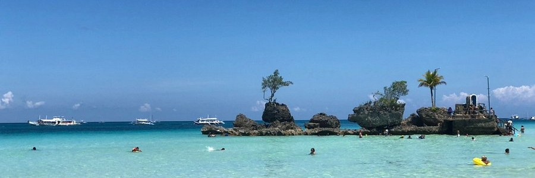• Boracay
Famous for its powdery white sand and lively nightlife, Boracay never disappoints. I enjoyed both the relaxing beachside atmosphere and the thrilling water sports available on the island. 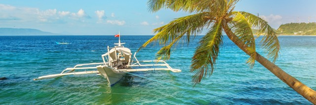• Puerto Galera
A tropical getaway known for its beautiful beaches and vibrant underwater scene. Diving enthusiasts will love the stunning coral reefs and diverse marine species. 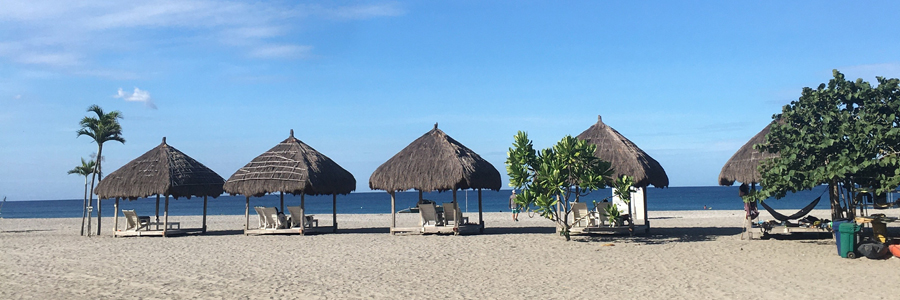• Zambales
A perfect destination for camping by the beach and enjoying stunning sunsets. It is also home to Anawangin Cove and Nagsasa Cove, known for their unique pine trees and scenic mountain backdrops. 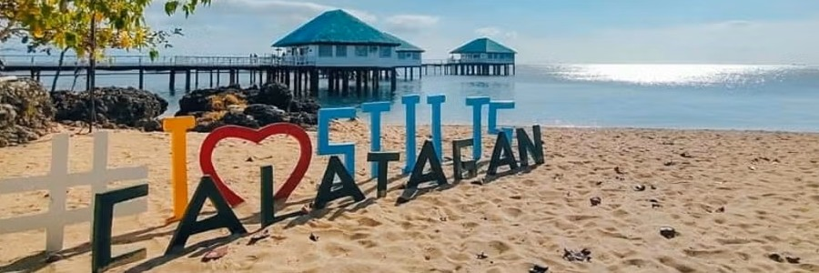• Calatagan
A peaceful coastal retreat with picturesque sandbars and clear waters. The underwater world here is rich with marine biodiversity, making it great for snorkeling and diving. 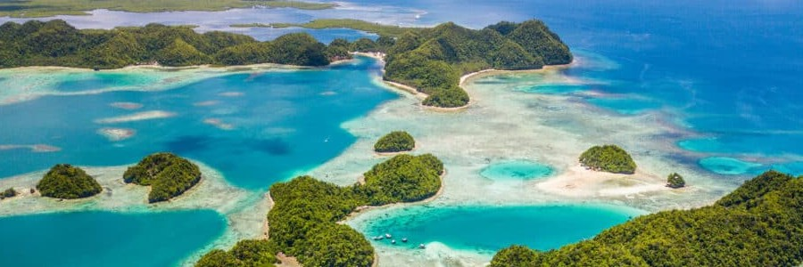• Siargao
The surfing capital of the Philippines, known for its laid-back island vibes, crystal-clear lagoons, and beautiful rock pools like the famous Magpupungko. 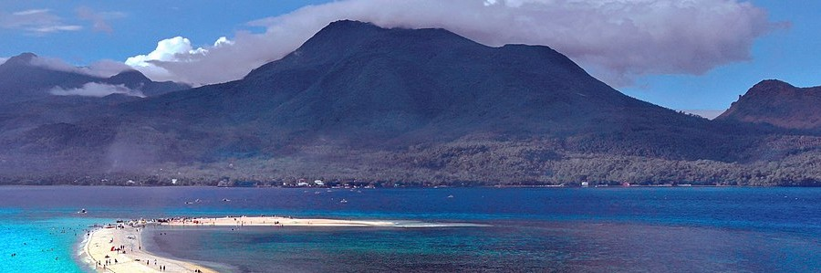• Camiguin
An island paradise with white-sand beaches, hot springs, and the breathtaking White Island sandbar.Mountain Adventures
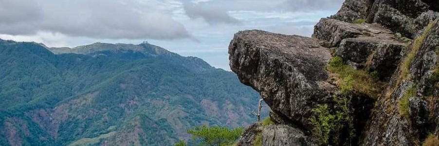• Mt. Ulap
A scenic climb offering breathtaking views of the Cordillera mountain range. The trail passes through grasslands, pine forests, and rocky summits. 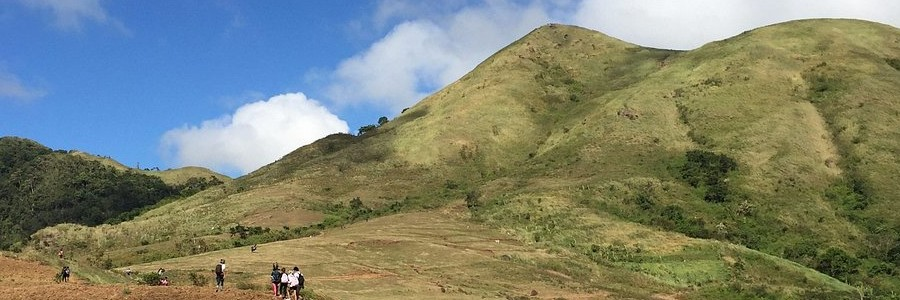• Mt. Talamitam
A rewarding hike with lush landscapes and a panoramic summit view. It is a beginner-friendly climb with stunning sunrise views. 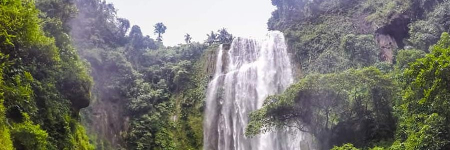• Hulogan Falls
A majestic waterfall hidden within Laguna’s lush forests, perfect for nature lovers. The journey through the jungle to reach the falls adds to the adventure.• Mt. Pulag
Known as the "Playground of the Gods," this is the highest peak in Luzon. The breathtaking sea of clouds at sunrise is one of the most magical experiences any hiker can have. 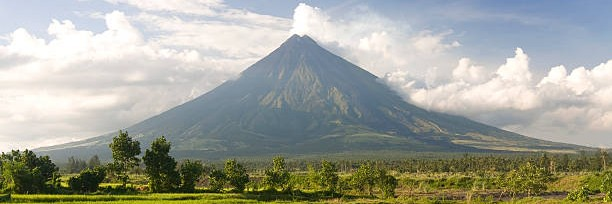• Mayon Volcano
Famous for its perfectly symmetrical cone shape, Mayon Volcano is a must-visit for those who love adventure and stunning landscapes. 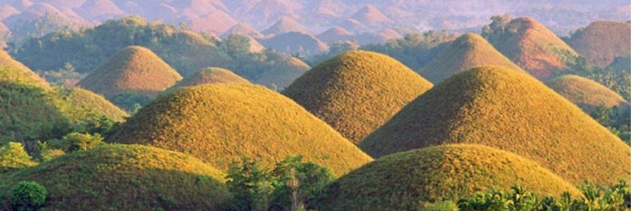• Chocolate Hills, Bohol
These unique geological formations are a must-see, especially during the dry season when they turn brown, resembling chocolate mounds.WHAT'S NEXT?
My journey as a traveler is far from over. There are still countless destinations to explore, new cultures to experience, and more stories to tell. Through my blog, I hope to inspire fellow adventurers to step out of their comfort zones and discover the beauty of the world. Stay tuned for more travel guides, itineraries, and personal stories from my adventures. Have you been to any of these places? Share your experiences in the comments below! Let’s keep exploring together! ✈️🌍
Balik Bahay